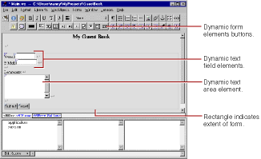

-
Place the cursor on the second line after the "My Guest Book" text.
-
Click
.
WebObjects Builder adds a form element to your component. The triangle at the upper-left corner indicates that it is a dynamic form, as opposed to a static form.The gray border indicates the extent of the form. You can increase its size by adding elements inside it.
-
Type the text "Name: " and press Shift-Enter.
This text replaces the word "Form" that was displayed by default.
-
Type "E-mail: " and press Shift-Enter twice.
-
Type "Comments: " followed by Shift-Enter.
You have just entered three lines (and a blank line) of static text inside the form. Now you'll enter some dynamic elements to receive input from the user: two text fields and a multi-line text area.
-
Place the cursor to the right of the text "Name: ".
-
Click to create a dynamic text field element (WOTextField).
-
Repeat steps 6 and 7 for "E-mail: ".
-
Use the button to create a multi-line text area below the "Comments: " line.
-
Press Shift-Enter twice to create two blank lines.
-
Click to create a Submit button, which is used to send the data in the form to the server.
-
Click to create a Reset button, which is used to clear the data in the form.
The window should now look like this:
